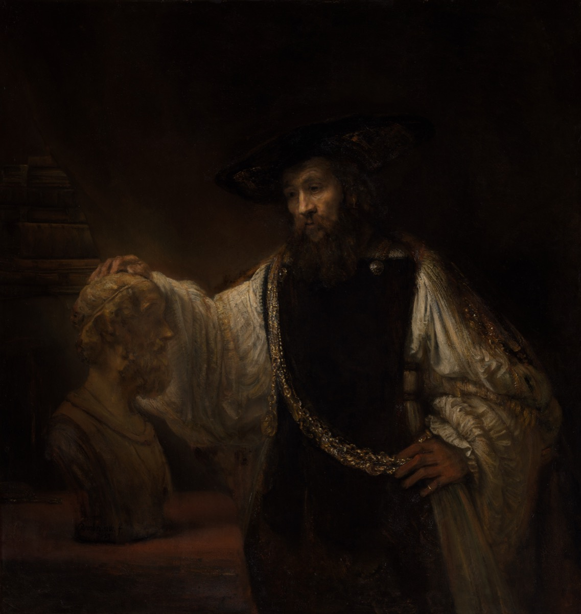

Ask a friend why they want the promotion. More money, probably. Ask why they want the money: a bigger place, less stress, a trip somewhere warm. Ask why they want those, and keep asking, and something odd happens. The answers get shorter, then they run out. Sooner or later you hit the floor: because it would make me happy. And there is no answer to "why do you want to be happy," because the question stops making sense. Nobody is happy in order to get something else.
That floor is where Aristotle starts. Everything we chase, we chase for the sake of something else, except for one thing. Happiness is the thing we want only for itself, the bottom of every chain of reasons. So if you want to know how to live, that is the place to aim. Work out what happiness actually is, and you have found the target the rest of your life is pointed at.
Here is the catch, and it is why the book exists. Everyone agrees they want to be happy. Almost nobody agrees on what it is. Ask around and you get the same three answers. Happiness is feeling good. Happiness is money. Happiness is being admired, having status, winning. Aristotle thought all three were the kind of quiet mistake that wastes a life. The pleasures fade and leave you wanting the next one. Money turned out to be a tool for getting other things, so it was never the point. And status lives inside other people's heads, which means it was never really yours. Three popular answers, three dead ends.
His own answer takes ten books to lay out, and it is not a feeling at all. Happiness, for Aristotle, is a whole life lived well. Not the mood you are in on a good afternoon, but the quality of a life taken end to end, the way we mean it when we say someone led a good life, usually only once it is over. And the way you get there is almost disappointingly practical. You build it, a little at a time, out of habits, the way you would learn an instrument. That is the argument this page walks through.
The book is the Nicomachean Ethics, set down in Athens around 340 BC and probably named for his son, Nicomachus. It does not read like scripture, and it does not read like self-help. It reads like what it is: the working lecture notes of the most organized mind in the ancient world. Aristotle tried to write down everything, biology, physics, logic, weather, poetry, politics, and here he takes on the one subject everybody cares about and nobody can pin down, which is how to live. He had studied under Plato for twenty years and come away disagreeing with him about most of it. Where Plato pointed up, to a perfect world of ideal Forms behind this one, Aristotle kept looking down here, at actual people and what actually makes them thrive.

One word will do a lot of work, so it is worth meeting now: eudaimonia. It almost always gets translated as happiness, and that is a small disaster, because in English "happiness" means a feeling, and eudaimonia is not a feeling. It is closer to flourishing, or living well, a life that is going well as a life. Think of a plant that is thriving, getting the light and water it needs and growing the way that kind of plant is meant to grow. Eudaimonia is that, for a person. Translators have argued over the word for a century, and you can watch them do it in the panels below.
The featured translation throughout is W.D. Ross's, the classic English version from the 1920s, now in the public domain, so every line is quoted in full. On the words and sentences where the modern translators split hardest, you can open a panel and line up five more, Irwin, Crisp, Rowe, Bartlett and Collins, and Sachs, against each other and against Ross. Seven stops, following the argument from its first question, what is happiness, to its last, what is the best thing a human being can do.
Stop 1 / Book 1, the highest good
Everyone wants it, nobody agrees what it is
Ross / Book 1, chapter 4
Verbally there is very general agreement; for both the general run of men and people of superior refinement say that it is happiness, and identify living well and doing well with being happy; but with regard to what happiness is they differ, and the many do not give the same account as the wise.
Nicomachean Ethics 1095a · W.D. RossNotice the trick in that sentence. Ask people to name the goal of life and they all say the same word, happiness, and nod at each other like they have agreed on something. They have agreed on nothing. The word is a placeholder, and underneath it everyone has filled in a different thing.
So Aristotle does the obvious thing and looks at how people actually live, on the theory that what you really think happiness is shows up in what you spend your days chasing. He finds three answers, the same three you would find today.
The first is pleasure. Most people, he says, go for enjoyment, and he is blunt about it: a life spent chasing good feelings is "a life suitable to beasts," because it is the one cows would pick too. He is not a prude, and pleasure comes back later as a real part of a good life. But as the whole of it, it fails the simple test of asking for more. The pleasure lands, fades, and leaves you exactly where you started, wanting the next one.
The second is honor, which is his word for status, reputation, being admired and looked up to. This is the goal of the ambitious, the political type, and it is a better answer than pleasure. But it has a fatal leak. Honor lives in other people. It is handed to you by the crowd, and the crowd can take it back tomorrow, which means it was never really yours. You want it, he notices, mostly as proof that you are good. So the thing you are actually after is the goodness, not the applause for it.
The third is money, and this one he dismisses fastest. Wealth is "merely useful," a tool for getting other things. Nobody wants a pile of money for its own sake, they want what it buys, which means money is never the destination. Chasing it as the goal is chasing the means and forgetting the end.
Three answers, three dead ends, and they fail in an instructive way. Pleasure does not last, honor is not yours, money is not the point. What you want is something that lasts, that belongs to you, and that is wanted for itself and not for what it gets you. That short list is the job description for happiness, and the rest of the book is Aristotle filling the position.
Eudaimonia: happiness, or something better?
εὐδαιμονία
eudaimonia · literally "having a good guardian spirit"
The most important word in the book, and "happiness" is a shaky translation of it. In English, happiness is a feeling, the good mood you are in this afternoon. Aristotle's word is not a feeling. It is an activity, living and doing well, stretched across an entire life. You can be wrong about whether you have it, the way you can be wrong that a life is going well, and you cannot have it for an afternoon.
So why not translate it "flourishing," which catches the living-well sense? Here is the surprise. Almost no major translator does. Every one of the six stacked through this page, across a hundred years, prints happiness, most of them flagging in a footnote that the word is a poor fit. "Flourishing" is what the commentators reach for; "happiness" is what is on the page, partly because "flourishing" makes a person sound like a houseplant. The honest move, the one this post takes, is to keep "happiness" and just remember it means a life going well, not a mood.
Aristotle's own plain synonyms for it are worth keeping in view: eu zen and eu prattein, "living well" and "doing well." That pair is the closest he comes to a definition, and notice it is doing well, not feeling good.
Stop 2 / Book 1, the function argument
What is a human being for?
Ross / Book 1, chapter 7
Now [if] the function of man is an activity of soul which follows or implies a rational principle ... human good turns out to be activity of soul in accordance with virtue, and if there are more than one virtue, in accordance with the best and most complete.
But we must add "in a complete life." For one swallow does not make a summer, nor does one day; and so too one day, or a short time, does not make a man blessed and happy.
Nicomachean Ethics 1098a · W.D. RossTo find out what a good human life is, Aristotle reaches for a tool he uses on everything: the idea of a function, the work a thing does that makes it the thing it is. A knife is for cutting, so a good knife is one that cuts well. A flute player's work is playing the flute, and a good flute player plays it well. For anything with a function, "good" is not a mystery. It just means doing that function well.
Then he asks the question that sounds almost rude. Does a human being have a function? The parts seem to. The eye is for seeing, the hand for grasping, every organ has its job. It would be strange, he says, if a carpenter and a shoemaker each had a function but a human being, as such, had none. So what is the work that only a human does? Not just being alive, plants manage that. Not just sensing and moving around, every animal does that. Strip away what we share with the broccoli and the dog and one thing is left: reason. Thinking, choosing, being able to ask what you should do. The human function is a life that uses the rational part of us.
That gives him the answer, and it is the load-bearing sentence of the whole book. If the human function is to live by reason, then a good human is one who does that distinctively human thing, and does it well. Happiness is activity of the soul in accordance with virtue. The word doing the work there is virtue, and at this stage it does not mean moral goodness, it means excellence, doing your function well. A knife has it when it cuts well. A person has it when they run the life of reason well, in their thinking and in their choosing.
And not for an afternoon. He adds "in a complete life," then drops the line everyone remembers: one swallow does not make a summer. A single warm day is not spring, and a single good day, or even a good year, is not a happy life. Happiness is the shape of a life taken whole, which is why he says later that you can hardly call a person happy while the story is still running. It is a verdict on the finished thing, not a reading off the meter right now.
That cuts the other way too, and Aristotle is honest about it. Happiness is not fully yours to lock down. His grim example is Priam, the king of Troy, who lived well for a long life and then, in old age, watched his city burn and his sons killed. A big enough disaster, late enough, can spoil even a good life's claim to have gone well. Unlike the Stoics who came after him, Aristotle will not pretend otherwise. The good life needs a floor of plain luck under it, health, enough money, people who are not all taken from you. You build happiness, and the world still gets a vote.
Two words the argument rests on: virtue and function
The conclusion hangs on two Greek words, and the translators split on both. Here is the spread, and what each one is reaching for.
Usually virtue, but that word has gone churchy in English, all duty and restraint. Aristotle's is wider and cooler: the excellence of a thing, whatever makes it good at being what it is. A sharp eye and a fast horse both have arete. Ross, Irwin, Crisp, Bartlett and Collins, and Sachs all keep virtue. Rowe alone breaks ranks and prints excellence the whole way through, which catches the eye-and-horse breadth but loses the moral weight. Read "virtue" here and hear "excellence" underneath it.
A thing's job, the work only it does. Ross, Rowe, and Irwin call it the function (Irwin coined the phrase "the function argument"). Bartlett and Collins, and Sachs, prefer the plainer work. Crisp goes furthest and unpacks it as the characteristic activity, to stop you hearing "function" as something stamped on us from outside, like a label on a tool. And when Aristotle says happiness is the soul's activity, Sachs writes being-at-work, which he calls the most important idea in all of Aristotle. Happiness is not a thing you have. It is the soul at work.
Stop 3 / Book 2, habituation
You learn it the way you learn an instrument
Ross / Book 2, chapter 1
The virtues we get by first exercising them, as also happens in the case of the arts as well. For the things we have to learn before we can do them, we learn by doing them, e.g. men become builders by building and lyre-players by playing the lyre; so too we become just by doing just acts, temperate by doing temperate acts, brave by doing brave acts.
Nicomachean Ethics 1103a · W.D. RossHere is the practical heart of the book, and Aristotle's image for it is not a sermon, it is a music lesson. Nobody is born playing the lyre, and nobody learns it from a book. You learn it by playing, badly at first, wrong notes everywhere, until one day your hands know the thing and you stop having to think about it. Virtue, he says, works the exact same way. You become brave by doing brave things. You become honest by telling the truth when a lie would be easier, and generous by actually handing things over. The act comes first. The character is what is left behind once you have done enough of them.
That is backwards from how we usually talk, and the reversal is the whole point. We say someone is generous, and so they give. Aristotle says you give, and the giving, repeated, is what makes you generous. Character is not the engine that drives the acts, it is the sediment they leave. He is being almost literal about this. The Greek word for character here is tied to the word for habit, and our word "ethics" comes straight off it. Ethics, for him, is the study of how habits make a person.
The instrument keeps teaching. A beginner sounds rough and has to think about every finger; a player who has put in the years sounds easy and is thinking only about the music. Virtue goes the same way. At first the right thing is awkward and takes a clench of willpower. Do it long enough and it gets quiet, almost automatic, even pleasant. That is actually his test for whether you have the virtue yet or are only faking it: the truly brave person does the brave thing and is not secretly miserable about it. When the good act starts to feel like the natural one, the habit has become character.
This is also why he says it makes "all the difference" what habits you are raised into. A child taught early to share, to tell the truth, to sit with a little discomfort, has been handed a head start they did not choose, the way a kid put on the piano at five grows an ear they will never have to work for. It is not fair, and Aristotle does not pretend it is. Good upbringing is luck, and it matters enormously.
One honest snag, because he saw it too. How do you do a brave act before you are brave? If only brave people can act bravely, the door is locked from the inside. His answer is the music answer one more time. The beginner plays real notes, just not yet the way a musician does. You do the brave thing, in the way a brave person would do it, before the courage is fully in you, and the doing is what puts it there. You practice the form until the substance grows up underneath it. There is no other door in.
Stop 4 / Book 2, the doctrine of the mean
Courage sits between two fears
Ross / Book 2, chapter 6
Virtue, then, is a state of character concerned with choice, lying in a mean, i.e. the mean relative to us, this being determined by a rational principle, and by that principle by which the man of practical wisdom would determine it.
Nicomachean Ethics 1107a · W.D. RossThis is the famous one, the golden mean, and it is the most misread idea in the book. People hear "the mean" and think it means be moderate, stay lukewarm, never feel anything too strongly. That is the opposite of what he says. The mean is not the wishy-washy middle. It is the right amount, and the right amount can be enormous.
Courage is his worked example, and it makes the idea concrete. Stand a person in front of real danger and they can fail in two directions. Feel too little fear and act on it, and you are reckless, throwing your life away on a dare. Feel too much and let it rule you, and you are a coward, running when you should stand. Courage is neither. It is feeling the fear that fits the danger and acting well in spite of it, facing the right things, for the right reason, at the right time. The brave person is not the one who feels no fear. That person is just a reckless fool who hasn't noticed the cliff. The brave one feels it and holds.
And the mean is "relative to us," not a fixed midpoint you could look up. Aristotle's own example is food: the right amount for an Olympic wrestler is not the right amount for a beginner. There is no number. The right amount of anything, fear, anger, generosity, depends on who you are, the situation, and the stakes. Which is the whole reason the next idea has to exist, because if there is no formula, somebody still has to judge the right amount in the moment, and that judgment turns out to be a skill of its own.
Almost every virtue has this shape, a sweet spot between a too-much and a too-little. He lays out a whole table of them.
| In the matter of | Too little | The virtue | Too much |
|---|---|---|---|
| facing danger | cowardice | courage | recklessness |
| bodily pleasures | (almost nobody) | self-control | overindulgence |
| giving money | stinginess | generosity | wastefulness |
| anger | spinelessness | an even temper | a short fuse |
| telling the truth about yourself | false modesty | honesty | boastfulness |
| being funny | being a bore | wit | buffoonery |
From Aristotle's own list, Book 2.7. Each virtue is the well-judged amount between two ways of missing.
The table also explains why being good is hard and going wrong is easy. There is one way to hit the center and a thousand ways to miss it. You can overshoot or undershoot, miss early or late, aim at the wrong person, for the wrong reason. Aristotle's line is that it is easy to miss the mark and hard to hit it, the same reason it is easy to miss a target and hard to land the arrow dead center. Vice has the whole field to land in. Virtue has the bullseye.
One guardrail, because the doctrine gets abused. The mean is not "everything in moderation, so anything goes in the right dose." Some things have no good amount. You cannot murder at the right time, or betray a friend to just the proper degree. Aristotle says this flatly: certain acts, like murder, theft, and adultery, are simply wrong, and there is no mean of them, because the badness is already baked into the name. The mean is a tool for the feelings and actions that can go right or wrong by degree. It was never a license.
The mean, the middle, or the intermediate?
One sentence, the definition of virtue itself, in six hands. Watch four things move: virtue or excellence, the state it is, the mean it sits in, and the wise person who fixes the amount.
The bones are identical and the surface agrees on almost nothing. A "state of character," a "disposition," a "characteristic," an "active condition." A "mean," an "intermediacy," a "mean condition." The "man of practical wisdom," the "prudent person," the "wise person," the "person with practical judgment." Same Greek, same idea, not one shared noun. This is exactly why the post leans on one translation and lets you open the rest. Any single English Aristotle is one reading among many.
Stop 5 / Book 6, practical wisdom
Knowing the rule is not enough
Ross / Book 6, chapter 5
[Practical wisdom] is a true and reasoned state of capacity to act with regard to the things that are good or bad for man.
Nicomachean Ethics 1140b · W.D. RossThe doctrine of the mean left a hole, and Aristotle knew it. Virtue is the right amount, fine, but who decides the right amount? There is no formula. You cannot write down "give exactly this much, and feel exactly this angry, in exactly these cases." The right amount depends on the particulars, and reading the particulars is a skill in its own right. He has a name for that skill: phronesis, practical wisdom. It is the judgment that tells you what this situation actually calls for.
Two things it is not. It is not raw cleverness, because you can be clever and aim it at terrible ends. And it is not book learning. You can memorize every rule of good conduct and still fumble the live moment, the way someone aces the written driving test and then panics at the first roundabout. Practical wisdom is the thing that closes that gap. It is what a good doctor has that a medical textbook does not: the read on this patient, in this bed, today. The wise person sees what the situation needs and the merely well-informed person misses it.
Aristotle makes a sharp observation about this. You find young geniuses in mathematics all the time, he says, prodigies of sixteen. You do not find young people of practical wisdom. The reason is that practical wisdom is built from experience, and experience only comes with time. There is no shortcut and no skipping ahead. A twenty-two-year-old can out-calculate anyone in the room and still have no idea how to handle a grieving friend, a bad boss, or their own anger, because those are not problems you solve on paper.
This is the piece that holds all the others together. Every virtue is, underneath, a judgment call: how much courage here, how much generosity, toward whom, at what moment. Take the judgment away and the virtues fall apart. Courage with no judgment is just recklessness swinging at random. Generosity with no judgment writes a check to a con artist. So Aristotle says something that sounds circular until you sit with it: you cannot really have any of the virtues without practical wisdom, and you cannot have practical wisdom without the virtues. They grow up together, each one needing the other, which is exactly why character takes a whole life and not a weekend.
Practical wisdom, prudence, or judgment?
One Greek word, and the translators cannot agree what to call it. The spread is a fair measure of how slippery the idea is.
Ross and Crisp say practical wisdom, now the standard, and it says what it is: wisdom you can act on. Irwin and Bartlett and Collins say prudence, the older Latin-rooted word, though to a modern ear "prudence" sounds like caution and insurance, which is not it at all. Sachs says practical judgment, which may be the truest, because the thing really is judgment, sizing up a particular case on the spot. Rowe just says wisdom, flat. Four English words for one Greek one, because we no longer keep a single word for "the skill of seeing what a situation needs and doing it." Aristotle did.
Stop 6 / Books 8 and 9, friendship
No one would choose to live without friends
Ross / Book 8, chapter 1
For without friends no one would choose to live, though he had all other goods.
Nicomachean Ethics 1155a · W.D. RossAristotle spends two entire books, more than on any single virtue, on friendship. That throws people who expect a book of ethics to be a list of rules. But it follows straight from everything before it. If happiness is a whole life lived well, and a life is lived among people, then you cannot be happy alone. He says it flatly: nobody would choose to live without friends, even handed every other good thing. A life with no one in it is not a life going well, no matter what else is in it.
He sorts friendship into three kinds, and the sorting is the useful part, because most of what we call friendship is the first two.
The first is friendship of utility: you are useful to each other. The contact who can open a door, the neighbor with the ladder, the colleague you trade favors with. Real and worth having, but it lasts exactly as long as the usefulness does. When the deal closes or the jobs change, the friendship quietly ends, because the use was the point.
The second is friendship of pleasure: you enjoy each other. The funny one, the friend who is good company at a bar. Also real, also a little fragile. When the fun runs out, or you change and the old jokes stop landing, it fades. Most friendships of our twenties are this kind, which is why so few of them survive our thirties.
The third is the rare one, friendship of character, or as he says, friendship of the good. Here you love the other person for who they are, not for what they do for you or how they make you feel, and you want their good for their own sake. These take a long time to build, you can only have a few, and they are the ones that last, because the thing you love, the person's character, does not run out the way usefulness and fun do. His phrase for it is unforgettable: a friend is "another self." You have widened the border of yourself to take someone else inside it, so that their good is simply yours, no trade involved.
None of this makes the first two kinds bad. Most of your friendships will be utility and pleasure, and that is fine, that is most of life. The point is to know which is which, and to know that the third kind cannot be hurried or bought. It is built out of years and shared trouble, and if you get two or three of them in a life you have done well. This is also where the whole argument has been heading. Virtue was never a solo performance. It is mostly something you do with and for other people, and its highest form is the friend whose good you want as if it were your own, because, by then, it is.
Stop 7 / Book 10, the best life
The best thing a human can do
Ross / Book 10, chapter 7
We must not follow those who advise us, being men, to think of human things, and, being mortal, of mortal things, but must, so far as we can, make ourselves immortal, and strain every nerve to live in accordance with the best thing in us.
Nicomachean Ethics 1177b · W.D. RossThe last move surprises almost everyone. After nine books on the active, social virtues, courage and justice and generosity and friendship, the whole busy life of doing well by other people, Aristotle asks which life is the very best, and his answer is not the busy one. It is contemplation. The life of the mind. Understanding the deepest, truest things for no reason beyond the understanding itself.
The logic is consistent with everything before it, which is what makes it land. Happiness is the activity of our best part doing its best work. Our best part is reason, we settled that at the function argument. And reason's highest use is not solving today's problem, it is understanding, grasping what is true and does not change, for its own sake. That activity, he argues, is the most self-sufficient (you need the least from anyone else to do it), the most unbroken (you can keep it up longer than any action), and the most completely its own reward. It is the closest a human being ever gets to what a god would do with eternity. Which is why he ends on that startling instruction: do not settle for thinking only mortal thoughts, make yourself immortal as far as you can, and live by the best thing in you.
Now, the honest part, because this is where careful readers have argued for a hundred years and it would be cheating to paper over it. The top of the book does not sit cleanly on the rest. For nine books, happiness looked like the full, engaged life: virtue in action, among friends, in a community. Then Book 10 crowns a quieter, more solitary thing, the philosopher's contemplation, which needs friends less and can look a little cold. Scholars split into two camps. One says the best life is the whole package and contemplation is its crown. The other says Aristotle means what he says when he calls contemplation the highest happiness and ranks the moral life as happiness "in a secondary degree." The text genuinely pulls both ways. One of the most careful readers of it, the philosopher John Cooper, argued for one side, then years later published a paper changing his mind to the other. So distrust anyone who tells you it is obvious.
The fair reading is the modest one. Aristotle is not telling you to walk out on your friends and obligations to go sit and think. He is saying the single highest thing a human being can do is understand, and a complete life leaves room for it. The contemplative still has to be just, and brave, and a good friend, like everyone else. They simply also get the best hours there are, the ones spent using the mind on what is true, for its own sake.
So strip it all the way down. What does Aristotle actually leave in your hands? Not a feeling to chase. Not a thing to buy. Not a crowd to win. A whole life, built slowly out of good habits, steered by a judgment you can only earn by living, spent among a few people whose good you want as your own, and lit up here and there by the hours you spend using the best thing in you for no reason except that it is the best thing in you. He thought that was the happiest a person could be.
Twenty-three centuries later, after we have tried pleasure and money and status and posted the results, it is still surprisingly hard to do better.
Where the text comes from
The featured translation throughout is W.D. Ross's, first published in 1908 and long in the public domain, which is why every passage above is quoted in full instead of in snippets. Ross is the version most English readers first meet Aristotle in. It runs a little formal, but it is careful and clear, and it is free for anyone to read end to end. Every quotation is verbatim; I pulled the text and checked it rather than trusting memory.
On the words and lines where the modern translators split hardest, the side panels stack five of them against Ross, each one named:
- The featured text is W.D. Ross (Oxford, 1908), via the MIT Internet Classics Archive and Wikisource.
- The comparison panels stack Terence Irwin (Hackett, 1999), Roger Crisp (Cambridge, 2000), Christopher Rowe with Sarah Broadie's commentary (Oxford, 2002), Robert C. Bartlett and Susan D. Collins (Chicago, 2011), and Joe Sachs (Focus, 2002). These are the standard modern English versions, and they disagree in ways that are the whole reason the panels exist.
- The background leans on the Stanford Encyclopedia of Philosophy entry on Aristotle's ethics, including its account of the long argument over whether Book 10 fits the rest of the book.
Three honest notes. The "we are what we repeatedly do" line is Will Durant's, from The Story of Philosophy (1926), not Aristotle's. It is a fair summary of Book 2, but he never wrote the sentence. The table of virtues is Aristotle's own, from Book 2.7, with his names put into plainer English. And the tension at the top, between the engaged life of the first nine books and the contemplative life crowned in the tenth, is real and still unsettled among scholars; I have tried to name it rather than smooth it over.
The breakdowns are mine. Most of the modern translations are still in copyright; they appear here in short excerpts, for comparison and study, with every translator named.
The painting in the opening and on the homepage card is Rembrandt van Rijn's Aristotle with a Bust of Homer (1653), in the public domain via the Metropolitan Museum of Art's open-access program (CC0). Aristotle, draped in the gold chain of worldly success, rests a hand on a bust of Homer, a poet centuries dead. It is hard to picture a better image for a book about what a good life is actually made of.